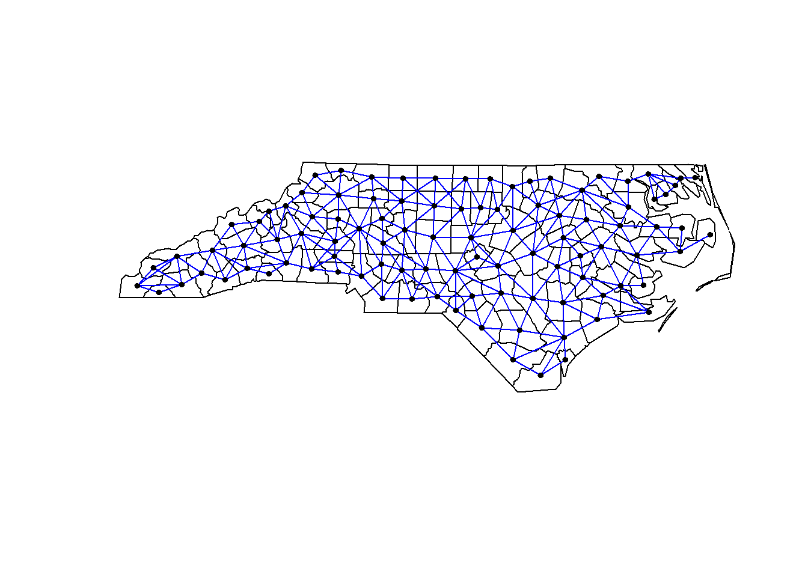
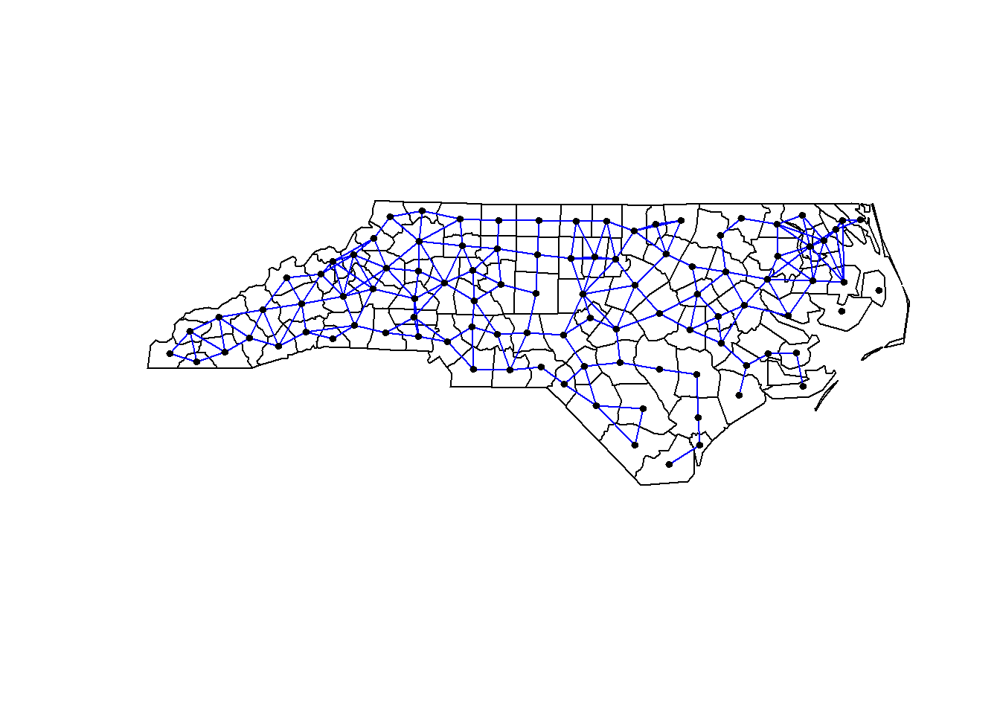
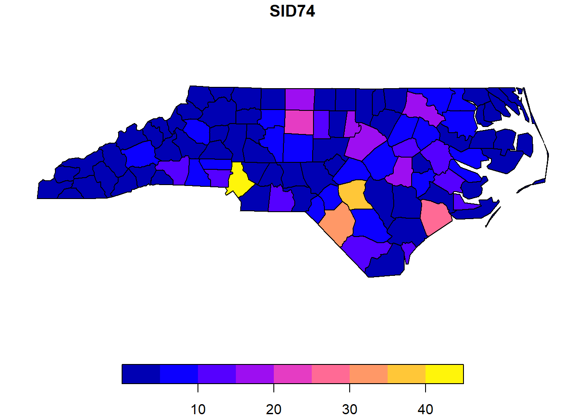
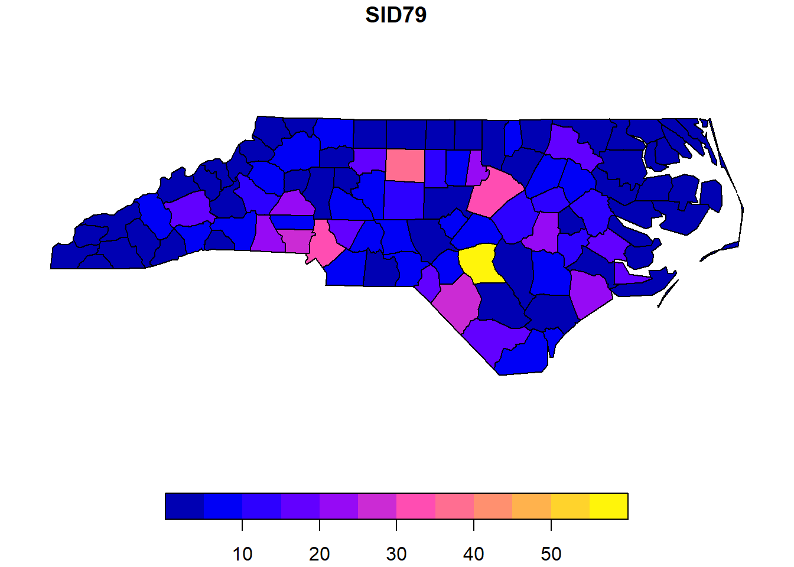
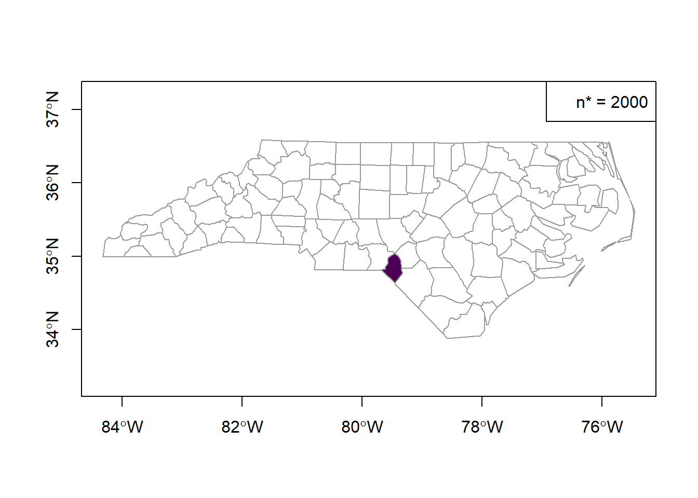
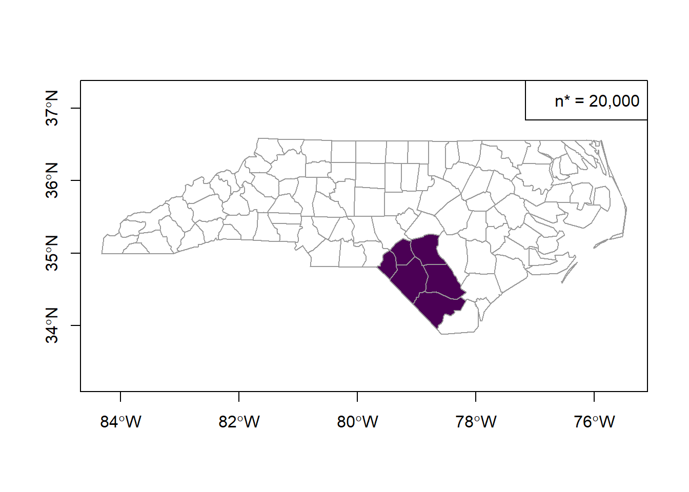
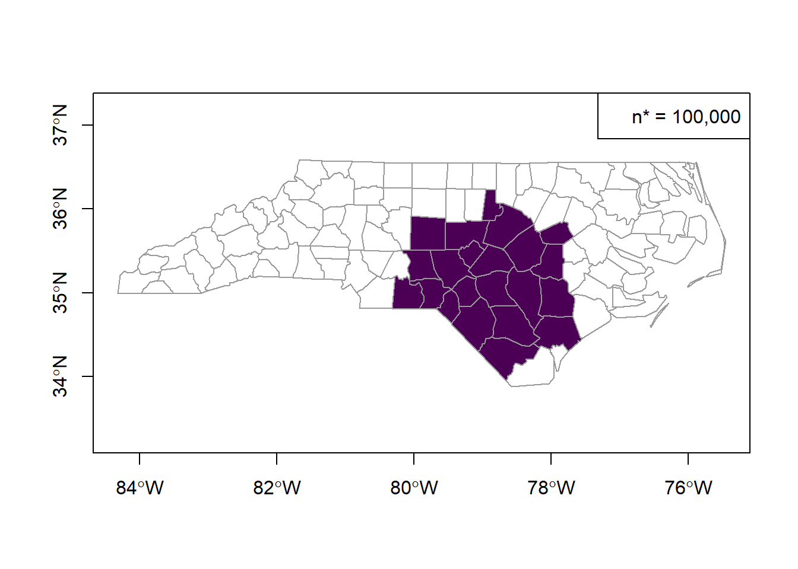
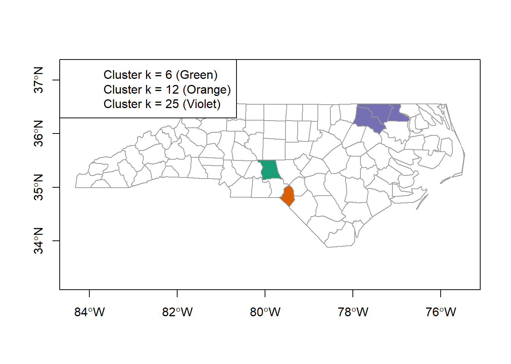
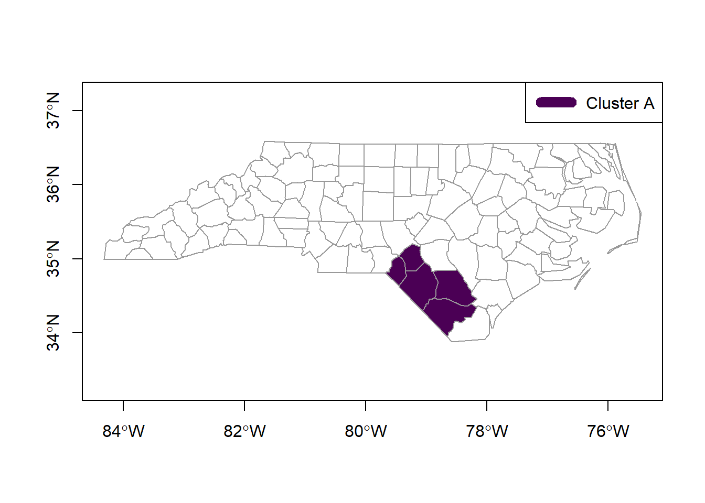

The nc.rda file contains information related to SIDS cases in North Carolina. The object includes nc.sids, a spatial data frame compatible with the sf package with 20 variables measured for 100 counties. It contains data given in Cressie (1991, pp. 386-9), Cressie and Read (1985), and Cressie and Chan (1989) on sudden infant deaths in North Carolina for 1974-78 and 1979-84. The nc.rda objects also contains the neighbor list given by Cressie and Chan (1989) omitting self-neighbors (nb89), and the neighbor list given by Cressie and Read (1985) for contiguities (nb85). The nc.sids object contains the following variables:
SP_ID: SpatialPolygons ID
CNTY_ID: county ID
east: eastings, county seat, miles, local projection
north: northings, county seat, miles, local projection
L_id: Cressie and Read (1985) L index
M_id: Cressie and Read (1985) M index
names: County names
AREA: County polygon areas in degree units
PERIMETER: County polygon perimeters in degree units
CNTY_ Internal county ID
NAME: County names
FIPS: County ID
FIPSNO: County ID
CRESS_ID: Cressie papers ID
BIR74: births, 1974-78
SID74: SID deaths, 1974-78
NWBIR74: non-white births, 1974-78
BIR79: births, 1979-84
SID79: SID deaths, 1979-84
NWBIR79: non-white births, 1979-84
Problem 1
Construct plots of the two neighbor relationships (nb85 and nb89) centered at the approximate centroids of each county (i.e., use the st_centroids function to get the approximate centroid of each county for plotting purposes). What differences do you notice in the two plots?
Solution
library(spdep)
Loading required package: spData
The legacy packages maptools, rgdal, and rgeos, underpinning the sp package,
which was just loaded, will retire in October 2023.
Please refer to R-spatial evolution reports for details, especially
https://r-spatial.org/r/2023/05/15/evolution4.html.
It may be desirable to make the sf package available;
package maintainers should consider adding sf to Suggests:.
The sp package is now running under evolution status 2
(status 2 uses the sf package in place of rgdal)
To access larger datasets in this package, install the spDataLarge
package with: `install.packages('spDataLarge',
repos='https://nowosad.github.io/drat/', type='source')`
Loading required package: sf
Linking to GEOS 3.11.2, GDAL 3.6.2, PROJ 9.2.0; sf_use_s2() is TRUE
library(sf)library(smerc)
# This research was partially supported under NSF grants 1463642 and 1915277
load(file="nc.rda")# plot region boundaries from nc.sidsplot(sf::st_geometry(nc.sids$geometry))# plot neighbors nb85plot(nb85, coords =st_centroid(st_geometry(nc.sids$geometry)),add=TRUE, col="blue", pch =19, cex =0.6)

# plot region boundaries from nc.sidsplot(sf::st_geometry(nc.sids$geometry))# plot neighbors nb89plot(nb89, coords =st_centroid(st_geometry(nc.sids$geometry)),add=TRUE, col="blue", pch =19, cex =0.6)

The first plot for the nb85 neighbors appears to have more connections all across the study area with fewer patterns of clustering while the nb89 area has more white space (less connections ar a higher spatial scale) and appears to have some evidence of clustering in the northeast region of our study area.
Problem 2
(a)
Create choropleth maps (a plot that colors each region with a value indicating the response level) of the SID74 and SID79 variables.
Solution
plot(nc.sids["SID74"])

plot(nc.sids["SID79"])

(b)
Where do the SIDS deaths tend to be highest? Is there a lot of discrepancy between the plots of the two data sets, or is the overall pattern similar?
Solution
In general, it appears the intensity of SIDs deaths located in the center bottom region, with a slight translation of SIDs deaths from right to left between the SID74 to the SID79 plot.
(c)
Why must we be cautious in concluding the brighter regions are most likely to be hotspots/clusters of cases? What might be a better way of displaying the data?
Solution
The brighter regions may have more total number of cases but also have a much higher population or number of births. A better way to display the data would be to show the intensity in that county relative to the county’s total population or total birth count.
Problem 3
Use the CEPP method to identify potential clusters for the SID74 variable. Note that the “population” associated with each region should be the associated number of births during the respective time period, provided in BIR74. Use a significance level of 0.01 and \(n^*=\) 2000, 20000, and 100000. Use east and north (the x and y coordinates) to define the centroid associated with each region. Do not use the centroids you obtained from the st_centroids function.
Warning in sig_noc_mod(tobs = cstar, zones = nn, pvalue = pvalue, alpha =
alpha, : No significant clusters. Returning most likely cluster.
# summary of significant clusterssummary(cepp100k)
nregions max_dist cases ex rr stat p
1 22 129.4 295.3834 253.4 1.3 295.4 0.032
(a)
State the null and alternative hypothesis test in the context of the problem for a generic \(n^*\).
Solution
Null: There is no window with n* persons at risk that has significantly more cases than what would be expected under CRH.
Alternative: There is at least one window with n* persons at risk that has significantly more cases than would be expected under CRH.
(b)
Interpret the overall results in the context of the problem.
Solution
We see evidence of clustering of intensity of cases relative to what would be expected under CRH for n* = 2,000 and n* = 20,000 at the alpha = 0.01 level. Specifically, we can conclude that the intensity in the identified regions is not consistent with the constant risk hypothesis at the n* = 2,000 persons at risk and n* = 20,000 persons at risk.
(c)
Plot the results on the map of North Carolina counties. Don’t worry too much about clearly identifying the clusters (cluster A, B, C, etc.). Look at the overarching patterns of the plots. Are the clusters in roughly the same areas? Are the clusters roughly the same size (in terms of number of regions?) Explain.
Solution
# plot of most likely clusters for n* = 2000plot(sf::st_geometry(nc.sids), border ="grey60", axes =TRUE,col =color.clusters(cepp2k))legend("topright", legend =c("n* = 2000"))

# plot of most likely clusters for n* = 20000plot(sf::st_geometry(nc.sids), border ="grey60", axes =TRUE,col =color.clusters(cepp20k))legend("topright", legend =c("n* = 20,000"))

# plot of most likely clusters for n* = 100,000plot(sf::st_geometry(nc.sids), border ="grey60", axes =TRUE,col =color.clusters(cepp100k))legend("topright", legend =c("n* = 100,000"))

The clusters appear to be in the same relative region (lower central region) however the number of regions for each plot more than doubles from the previous - this makes sense because as we increase the threshold for n* (number of persons at risk identified in the window) the more regions will be in the window with that many persons at risk.
Problem 4
Use the Besag-Newell method to identify potential clusters for the SID74 variable. Note that the “population” associated with each region should be the associated number of births during the respective time period, provided in BIR74. Use a significance level of 0.01 and \(c^*=\) 6, 12, and 25. Use east and north (the x and y coordinates) to define the centroid associated with each region. Do not use the centroids you obtained from the st_centroids function.
Warning in sig_noc(tobs = l, zones = cwins, pvalue = pvalue, alpha = alpha, :
No significant clusters. Returning most likely cluster.
summary(bn25)
nregions max_dist cases ex rr stat p
1 3 35.4 25 16.4 1.5 3 0.02901974
clusters(bn25)
[[1]]
[1] 66 42 46
(a)
State the null and alternative hypothesis test in the context of the problem for a generic \(c^*\).
Solution
Null: The most compact window (population wise) with at least c* cases is not significantly more compact than what is expected under the CRH.
Alternative: The most compact window (in terms of population size) with at least c* cases is significantly more compact than what is expected under the CRH.
(b)
Interpret the overall results in the context of the problem.
Solution
Based on the besag-newell test, we do not find evidence that the most compact window with c* cases is more compact than it would be under CRH for any value of c*. In other words, we do not find evidence of clustering of SIDs deaths more than would be expected under CRH.
(c)
Plot the results on the map of North Carolina counties. Don’t worry too much about clearly identifying the clusters (cluster A, B, C, etc.). Look at the overarching patterns of the plots. Are the clusters in roughly the same areas? Are the clusters roughly the same size (in terms of number of regions?) Explain.
mycol =brewer.pal(3, "Dark2")# create vector of colors to show results# default is white (no clustering)nccol =rep("white", nrow(nc.sids))# the most likely cluster locations for cstar = 6 are greennccol[bn6$clusters[[1]]$locids] = mycol[1]# the most likely cluster locations for cstar = 12 are orangenccol[bn12$clusters[[1]]$locids] = mycol[2]# the most likely cluster locations for cstar = 25 are violetnccol[bn25$clusters[[1]]$locids] = mycol[3]# plot most likely clustersplot(st_geometry(nc.sids), border="grey60", axes =TRUE, col = nccol)legend("topleft",legend =c("Cluster k = 6 (Green)", "Cluster k = 12 (Orange)","Cluster k = 25 (Violet)"),lwd =10, col = nccol)

The clusters for k=6 and k=12 are the same size, the cluster for k=25 has an additional 2 regions. The first two clusters are in the same lower central area of the study area while the k=25 cluster is in the top right corner of the study area.
Problem 5
Use the Poisson spatial scan statistic method under the CRH to identify potential clusters for the SID74 variable. Note that the “population” associated with each region should be the associated number of births during the respective time period, provided in BIR74, respectively. Use a significance level of 0.10. Use two different population upper bounds: 0.1 and 0.5. Use east and north (the x and y coordinates) to define the centroid associated with each region. Do not use the centroids you obtained from the st_centroids function.
# set parameterscoords <-cbind(nc.sids$east,nc.sids$north)cases = nc.sids$SID79pop = nc.sids$BIR74# expected number of casese =sum(cases)/sum(pop) * pop# apply circular scan methodscan =scan.test(coords = coords,cases = cases,pop = pop,ex = e,nsim =999,alpha =0.1)
computing statistics for simulated data:
# results from the test are available insummary(scan)
nregions max_dist cases ex rr stat p
1 5 49.9 70 42.5 1.7 7.9 0.027
# cluster informationclusters(scan)
[[1]]
[1] 78 9 24 47 83
(a)
State the null and alternative hypotheses in the context of the problem.
Solution
Null: The most likely cluster of cases (local rate in cluster relative to outside of cluster) is consistent with what is expected under the CRH.
Alternative: The most likely cluster (in terms of local rate of cases vs the rate outside of the cluster) is more extreme than what is expected under CRH.
(b)
Interpret the overall results in the context of the problem.
Solution
At the alpha = 0.1 level, we can reject the null hypothesis and conclude that there is evidence that the most likely cluster identified is more extreme in intensity of cases within the cluster relative to intensity of cases outside of the cluster than what would be expected under CRH.
(c)
Plot the results on the map of North Carolina counties. Don’t worry too much about clearly identifying the clusters (cluster A, B, C, etc.). Look at the overarching patterns of the plots. Are the clusters in roughly the same areas? Are the clusters roughly the same size (in terms of number of regions?) Explain.
Solution
# need to color 1 clustersmycol = grDevices::hcl.colors(1)plot(sf::st_geometry(nc.sids), border="grey60", axes=TRUE,col =color.clusters(scan, col = mycol))legend("topright", legend =c("Cluster A"),lwd =10, col = mycol)

The scan statistic only returned a single cluster. The location of this cluster is similarly in the lower central region, as most clusters we plotted with previous methods were.
Problem 6
How do the plots for the CEPP, Besag-Newell, and scan methods compare to one another? Do you believe there is a cluster (or clusters) of SIDS cases present in the data? Explain.
Solution
Most of the statistically significant evidence of clustering identified the clusters in the same general region - somewhere in the lower central area of our study area. This leads me to believe that there is significant evidence of clusters of SIDs cases, or at least of one cluster, and the location of that cluster is likely in the lower central region of our study area.